Card Database 2.0 · 41 Set Universes
Collections
Every Carry The Flame set has a home. Explore the anime, games, crossovers, and original collections behind the cards, then open that set in The Forge.

Every Carry The Flame set has a home. Explore the anime, games, crossovers, and original collections behind the cards, then open that set in The Forge.
